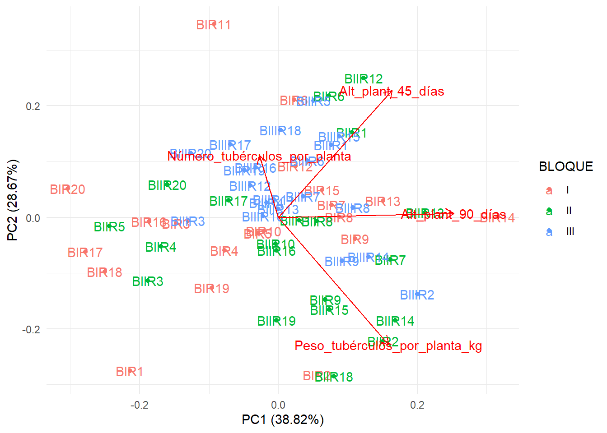

Importance of components:
PC1 PC2 PC3 PC4
Standard deviation 1.2461 1.0710 0.9892 0.5671
Proportion of Variance 0.3882 0.2867 0.2446 0.0804
Cumulative Proportion 0.3882 0.6750 0.9196 1.0000
Gráfico con variables empleadas y unidades experimentales combinadas:
papa <- papa %>%mutate(ID =paste0("B", BLOQUE, "R", REPETICION))autoplot(pca_res,data = papa,label =TRUE,label.label ="ID",colour ="BLOQUE",loadings =TRUE,loadings.label =TRUE) +theme_minimal()
Warning: `aes_string()` was deprecated in ggplot2 3.0.0.
ℹ Please use tidy evaluation idioms with `aes()`.
ℹ See also `vignette("ggplot2-in-packages")` for more information.
ℹ The deprecated feature was likely used in the ggfortify package.
Please report the issue at <https://github.com/sinhrks/ggfortify/issues>.

PCA para cada variable y cada unidad experimental por separado:
loadings <-as.data.frame(pca_res$rotation[, 1:2])loadings$variable <-rownames(loadings)# Gráfico de flechas:theta <-seq(0, 2*pi, length.out =200)circle <-data.frame(x =cos(theta), y =sin(theta))GraficoA <-ggplot() +geom_path(data = circle, aes(x = x, y = y), linetype ="dashed") +geom_segment(data = loadings, aes(x =0, y =0, xend = PC1, yend = PC2),arrow =arrow(length =unit(0.15, "cm")), color ="green") +geom_text(data = loadings, aes(x = PC1, y = PC2, label = variable),vjust =-0.5, color ="brown", size =3) +geom_hline(yintercept =0) +geom_vline(xintercept =0) +xlab(paste0("PC1 (", round(summary(pca_res)$importance[2,1] *100, 2), "%)")) +ylab(paste0("PC2 (", round(summary(pca_res)$importance[2,2] *100, 2), "%)")) +ggtitle("A) PCA – Círculo de correlaciones") +coord_equal() +theme_minimal()# Extraer coordenadas de los individuos "B x R":ind_coord <-as.data.frame(pca_res$x[, 1:2])ind_coord$ID <- papa$IDind_coord$BLOQUE <- papa$BLOQUEGraficoB <-ggplot(ind_coord, aes(x = PC1, y = PC2, label = ID, color =as.factor(BLOQUE))) +geom_point(size =2) +geom_text(vjust =-0.3, size =2) +xlab(paste0("PC1 (", round(summary(pca_res)$importance[2,1] *100, 2), "%)")) +ylab(paste0("PC2 (", round(summary(pca_res)$importance[2,2] *100, 2), "%)")) +ggtitle("B) PCA – Distribución de unidades experimentales (B x R)") +theme_minimal() +guides(color =guide_legend(title ="Bloque"))plot_grid(GraficoA, GraficoB, labels =c("A", "B"), ncol =2)